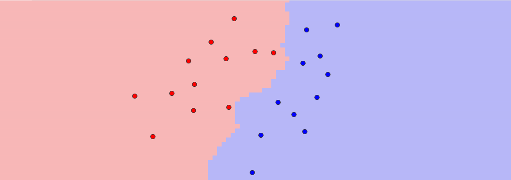
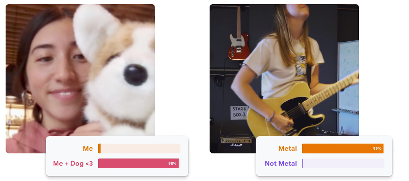

1. Search
RedBlobGames has a great introduction to search algorithms with interactive demos. The demo covers the following topics
- Breadth First Search
- Dijkstra’s Algorithm
- A*
This demo visualizes tool all kinds of search algorithms and possible heuristics, such as
- A*
- IDA*
- Breadth-First Search
- Greedy search (called Best-First Search here)
- Dijkstra’s Algorithm
- Jump Point Search
- Orthogonal Jump Point Search
- Trace
N-Puzzle is a web app for learning about graph-based search algorithms.
It tries to go from an initial 3x3 "schuifpuzzel" state to a desired 3x3 state by moving one tile into an empty spot. You can inspect the search tree step by step and see how the algorithm works.
For example:
 Open N-puzzle
Open N-puzzle
This demo has visualisations that solves search problems using all kinds of algorithms step by step.
Some of the more interesting ones that are not covered in the other demos are:
- Search Agent
- Step Costs
- Uniform Cost Search
- Depth Limited Search
- Iterative Deepening Depth-First Search
- Bi-directional BFS
Source: Artificial Intelligence: A
Modern Approach
by Stuart Russel and Peter Norvig

The following page has javascript implementations and visualisations for interesting usecases and problems beyond classical search, such as:
- Optimization Problem
- Hill Climbing Search
- Genetic Algorithm
- Vacuum World
2. Advanced Search and Games

Try and beat the chess AI if you can!
The computer uses the minimax algorithm to find the best course of action.
Change the search depth to increase the difficulty and dynamically tell how well you are doing using the generated score.
You can find the search tree below the chess board that the AI used to find its best course of action.
The demo generates random board states, so you can refresh the board state a couple of times to find a desired state.
- Score: 0
-
This simulator allows you to build your own minimax tree, and solve the problem step by step.
Furthermore, you can also test out the algorithm with and without alpha-beta pruning.
Open Minimax simulatorThe following page has a javascript implementation and visualisation for a tic-tac-toe AI that uses search algorithms.
The following algorithms are covered:
- Minimax
- Iterative Deepening
- Minimax with alpha-beta pruning
- Minimax with reversed alpha-beta pruning
3. CSP
This site has several visualisations for constraint satisfaction problems:
- Map Coloring
- N-Queens
- Sudoku
You can also use their code to solve your own constraint satisfaction problems
Open Csp.jsThis notebook gives a step-by-step guide to solving constraint satisfaction problems using these algorithms:
- Constraint Propagation
- AC-1
- AC-3
- Generic Search
- Backtracking & Forward checking
- Complexity
Source: MIT
This demo visualizes constraint satisfaction problem for the following problems:
- Map Coloring
- Sudoku
4. Automated Reasoning
CPMpy is a Constraint Programming and Modeling library in Python
There are lots of examples to be found on their Github.
An example notebook for solving Sudoku puzzles can be found in the Jupyter Lab below
Open CPMpy Jupyter Lab
Z3 is Microsoft's state-of-the-art theorem prover.
It is able to check satisfiability of logical formulas over one or more theories.
You can play with it or just follow along in the following notebook:
Open Z3 Jupyter NotebookSource: Github
5. Probability Theory
This page hosts probability-related information and videos, e.g. about independence and Bayes' theorem.
Introduction to Probability: Bayes TheoremBite Size Bayes is an introduction to Bayesian statistics using Python. It does not assume any prior knowledge of probability or Bayesian methods.
The first link links a Collab notebook introducing Bayes' theorem.
The Github page has a collection of other useful notebooks that tackle different problems related Bayesian statistics.
Open Bayes Jupyter NotebookSource: Github
6. Bayesian Networks
Bayes Sever is software that is used professionally to create and visualise Bayesian networks.
The software itself is not that useful for this course, but they do provide networks for the following well-known probability problems:
- Simpson's Paradox
- Monty Hall Problem
- Prosecutor Fallacy
pgmpy is a powerful python library for inference and simulations in Bayesian Networks. They have lots of examples on their Github page on how to use it.
This notebook for example show you how to solve the Monthy Hall problem using pgmpy:
Open Pgmpy Jupyter NotebookA Hidden Markov Model is a statistical approach to describing the evolution of observable events that depend on internal factors, which are not directly observable.
This notebook introduces what a Hidden Markov Model is, when you might want to use it, and how to implement it in python.
Open Jupyter Notebook7. Solvers
This simple solver solves SAT problems and displays the search tree. Variables are encoded as numbers (and the negation sign as "not"). The variables on each line are disjunctions that form a conjunctive normal form with the other lines. The interpreter goes line per line to find out if the given CNF is satisfiable or not.
Open SAT Solver
Z3 is Microsoft's state-of-the-art theorem prover.
It is able to check satisfiability of logical formulas over one or more theories.
You can play with it or just follow along in the following notebook:
Open Z3 Jupyter NotebookSource: Github
This demonstration solves the "Zebra puzzle"/"Einstein Riddle" logic grid puzzles.
This specific puzzle was taken from the book "Puzzle Baron’s logic puzzles" concerns people's state of origin, current city of domicile, and age.
Open GithubCreated by Dr. Bart Bogaerts.
8. Markov Decision Processes
This Medium article tackles Markov Decision Processes using the grid world example from the book Artificial Intelligence: A Modern Approach by Stuart Russell and Peter Norvig, and covers the following topics:
- Value Iteration
- Convergence of Value Iteration
- Policy Iteration
- Implementation in Python
This can serve as a good way to refresh your understanding of the Value Iteration Algorithm in Markov Decision Processes.
Read Medium articleAn overview and solution to the gambler's problem given in the book Reinforcement Learning: An Introduction by Richard S. Sutton and Andrew G. Barto
An example on how value and policy iteration can be used to solve gridworld problems.
Open GridWorld demo9. Machine Learning
1. Article
This article explains how the k-Nearest Neighbors algorithm works.
Read TDS article2. UKA Demo
 Open UKA Demo3. Stanford Demo
Open Stanford Demo4. Codepen Demo
Open Codepen DemoK-nearest neighbors can be computed using different kinds of distance metrics.
The following metrics are explained:
- Manhattan distance
- Euclidean distance
- Minkowski distance
1. Article
Classification is one of the main task within machine learning. The article provided serves as a brief introduction.
Read Medium article2. Demo
The demo is a model created at the university of Leiden. You can upload a picture of something and see if the model can recognise what is depicted on the picture.
Open Classification DemoAnomaly detection is a typical use case for machine learning.
This article provides a brief introduction to the topic at hand.
Read Geeksforgeeks article1. Article
This article explains what neural networks are and how they work.
Read Investopedia article2. Tensorflow Demo
Open Tensorflow playground Demo3. UKA Demo
Open UKA Demo4. Google Teachable Machine Demo
 Open Teachable Machine Demo